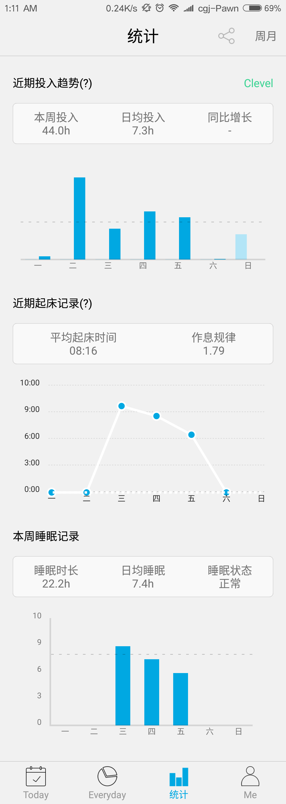

title: 2017-12月总结
date: 2017-12-26 21:37:40
[TOC]
（这篇总结本来是想月底31号才赶出来的，但是，很迷茫，有很多想说的，怕不立刻记下来就忘了，原因是：今天算是最后一节编译原理，晚上6点钟就出门去图书馆复习编译原理了，看了一个半小时的lecture13，看到后半部分的ppt，疑惑越来越多了，看不下去了。然后到了宿舍，不知道从哪里下手，看了半个小时直播，想弄清楚是什么在产生消极的因素，影响我学习的热情？–提高效率）
对于整本书来说，我一开始是相信只看老师的ppt是足够加深理解的，因为这本中译本翻译让我觉得很冗余，看不下去，但实际证明是完全行不通的。第二次实验的时候，我反复改了5-6次某些题，最后把书看了，再把作业写了，内心才稳定了下来。回顾整本书，我学了这个学期，对所学的内心根本没弄清实际用途。现在还有一个第三次作业跟实验，感觉好压抑，不知道怎么学进去。但想做一名符合自己要求的研究生，还是要坚持咬牙去学，先补作业吧。
今天是30号 00:42AM
晚上自习的时候，吃完饭就回到了图书馆，然后6：00-8:20PM，之后就再也学不下去了。然后回宿舍玩了四五把游戏，吃夜宵，看美剧。其实要是真的去赶作业，本来就赶不及。只是不知道，怎么就这样到了夜里了。
“深知此时比不上想比的，但还是没有继续努力。”
路上看了一驾宝马，是很粗犷的X5吧，我想买，但想到，会不会工作个几年后，开这辆的是我大学期间想超过的同学，但不是我。
此时此刻在看离散，自己总是在补牢，为一年前犯下的错在弥补着，比如挂了的离散，当时没学精的java，现在map、io什么的都不清楚特效。厌倦了一直在追逐着，却又不肯当下赶前。
颓废了一波。回到了原来的自己。
今天在图书馆想着，其实在图书馆，学习好像还挺好的。至少不在宿舍，所以必须把作业、目标等先完成才能离开，效率确实高不少。19年的图书馆，将由我来守候。
很讨厌，看什么一眼就觉得垃圾的人，你也是个垃圾。
刚出来的那个时候，想去看的，但某人一句“垫底辣妹听起来就不是好电影”就拒绝了，然而选择了别的垃圾电影。听说是励志的电影，很感动。沙耶加的爸爸一开始很不支持，但最后还是支持了沙耶加参加考试，父亲的身影虽然在镜头里显得模糊，但我仍然截了父亲那模糊身影做头像，想做小孩最坚实的依靠。
当然还有这个老师。
开始在自己的博客里记录有意义的数据。
人生有梦，各自精彩。

本周开始记录，下个月会提交完整的月信息。
手稿是一开始的记录，有些凌乱，我会继续整理，最后月总结，然后收篇整理，归纳。
记录的数据是为了改变陈国津，而不是仅仅为了发个朋友圈，说句：”今天好努力啊！“
今天没给出总结，时间有点对不上，如果有时间会再补上2018展望。
本月记录特别不好看，原因是：12月越来越懒，每天背单词时间less than 30minutes。我会改正下个月坚持，尽快提高成绩，然后六级》550.
其实说是总结，摆了这么多数据，没有深刻分析，很难有提高。
改进方法：
1.更加熟练掌握工具，更加规范使用工具，定时定量计划。
2.坚持习惯，21天anything else。